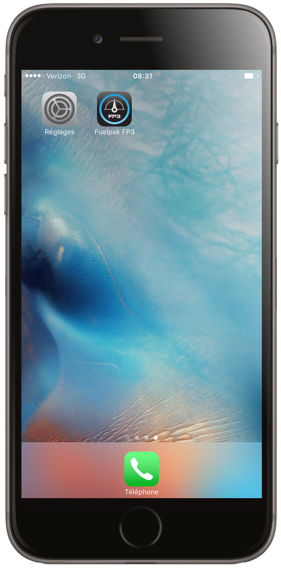
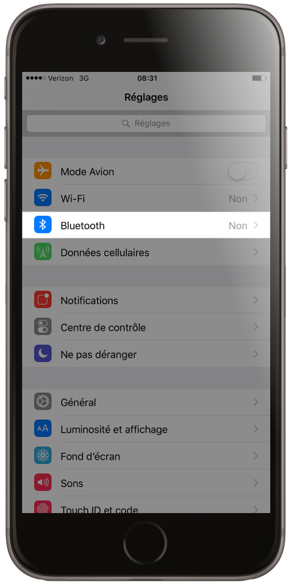
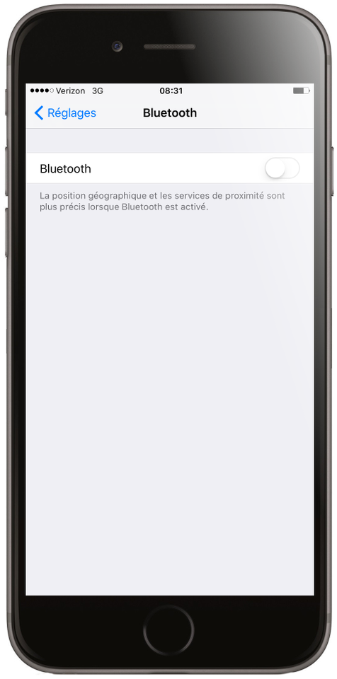
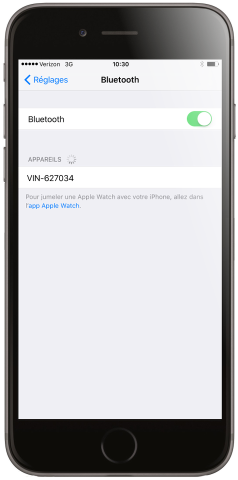
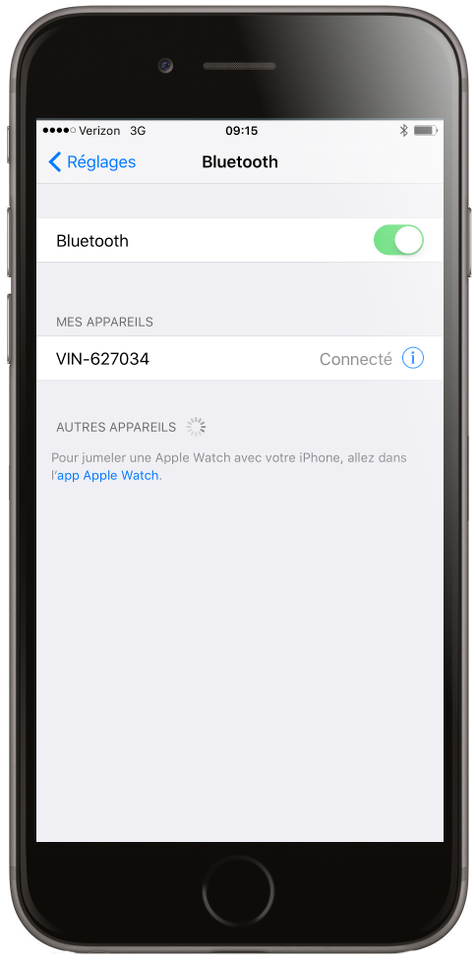

Web Tutoriel
1. Installez FP3 au port diagnostique de votre moto.

2. Branchez l'allumage de votre moto.

3. Après quelques secondes, une LED va flashé lentement.

4. A l'appareil iOS, choisissez réglage.
5. Sélectionnez Bluetooth.
6. Branchez Bluetooth (en cas qu'il n'est pas encore branché). Trouvez votre moto dans la liste des appareils disponibles et choisissez la.

7. Une fois lié, choisissez l'app FP3. L'app devra maintenant reconnaître le hardware FP3 lié à votre moto.
